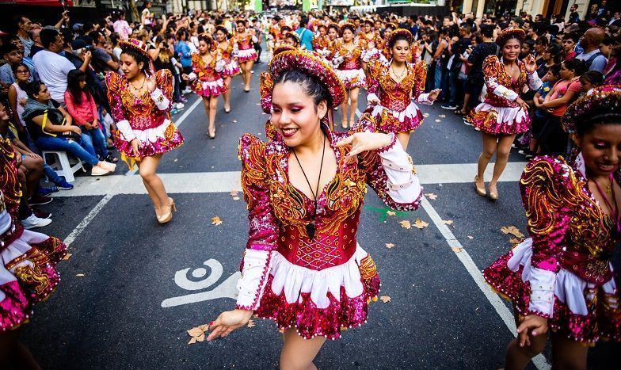

Annual Events:

Carnaval Porteno
One of the brightest events of Buenos Aires, the Carnaval Porteno, is held during the four weekends before the Catholic Lent starts. It takes place in 30 blocks of the so-called Big Buenos Aires and 40 settlements of the province. It involves tens of thousands of artists and more than 100 dance groups and murgas (a unique form of Latino dance tradition).

Opening of Opera and Ballet Season
Buenos Aires has a thriving theater scene, and at the prestigious Teatro Colon, opera hasn't lost any of its impact or importance since opening in 1908, with Verdi's Aida. The opera and ballet season is long awaited, opening after the summer break in March. Unless you're very well organised or well connected, it is difficult to get decent tickets for major productions, but look out also for music recitals and non-subscription performances.

International Tango Festival and World Cup
Dance aficionados, joined by plenty of international visitors, come together for this massive celebration of one of Argentina's most prolific cultures. Live orchestras, dance shows, tango-related films and plenty of milongas (dance parties) mark this two-week festival. Straight after the festival comes the world championship where the creme de la creme some together in a dance culture that has emerged from backstreet bordellos to high-society ballrooms.
City Attractions:
City Information:
| Formal Name: | Autonomous City of Buenos Aieres |
|---|---|
| Primary Language: | Spanish |
| Urban Area Population: | 2,891,082 |
| Metro Area Population: | 15,594,428 |
| City Area: | 203 km2 (78 mi2) |
| Metro Area: | 4,758 km2 (1,837 mi2) |
| Quality of Life Rank (Latin America): |
2nd (#1 is Montevideo) |
| Area Code: | #011 |
| Average Temperature: | Spring: 65.6°F Summer: 55 °F Fall: 64.3 °F Winter: 74 °F |